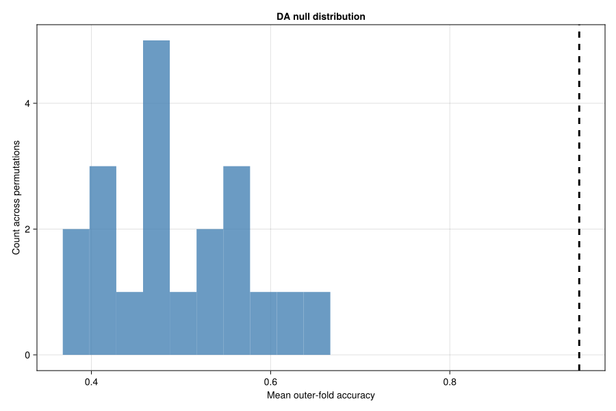
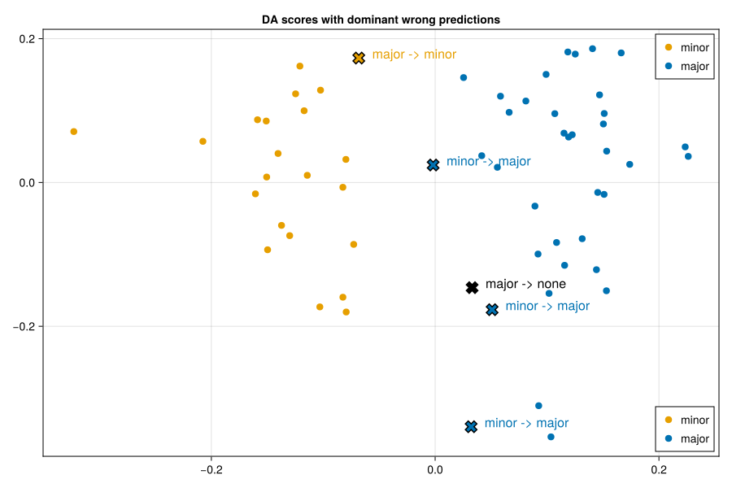

Cross Validation
N-CPLS is a supervised method, so it is always at risk of learning structure that is only accidentally aligned with the response. Cross-validation is used to test whether the relationship learned during fitting also generalizes to samples that were not used to fit the model. In N-CPLS, cross-validation also serves a second purpose: selecting the number of latent variables. These two tasks are coupled, because model complexity has a direct effect on apparent predictive performance.
How Nested Cross-Validation Works
NCPLS implements explicit nested cross-validation. The outer loop is used for performance assessment, whereas the inner loop is used for model selection. This keeps the choice of the number of latent variables separated from the final evaluation of the model and reduces optimistic bias.
At the low level, nestedcv and nestedcvperm work with explicit callbacks:
score_fnturns true and predicted responses into one scalar score per validation fold,predict_fndefines how predictions are formed from a fitted model,select_fnchooses the best component count from the vector of inner-fold scores.
For each outer repeat, one fold is held out as a test set and the remaining samples are used for training. Within that outer training set, an inner cross-validation evaluates all component counts from 1:max_components. The selected component count for the current outer repeat is the median of the inner-fold selections, rounded down to an integer. A final model is then fitted on the full outer training set with that selected number of components and applied to the outer test set.
The return value of nestedcv is a pair (scores, best_components):
scorescontains one outer-fold score per outer repeat,best_componentscontains the selected component count for each outer repeat.
When strata are supplied, fold construction is stratified so that class proportions are approximately preserved across folds. With reshuffle_outer_folds=false, one outer fold partition is built and then reused across repeats. With reshuffle_outer_folds=true, a new outer partition is drawn for each repeat.
NCPLS.nestedcv — Function
nestedcv(X, Y; ...)Run explicit nested cross-validation for NCPLS.
NCPLS.nestedcvperm — Function
nestedcvperm(X, Y; ...)Run a permutation test around nestedcv.
Example Data
The examples below reuse the synthetic multilinear generator introduced on the Fit page. That generator also returns auxiliary response structures used elsewhere in the manual, but on this page we only use the pure regression response and the class labels. To keep the documentation examples reasonably fast, the dataset is smaller than the one used for the fitting walkthrough, and the nested CV settings are modest.
using NCPLS
using Random
using Statistics
using CairoMakie
data = synthetic_multilinear_hybrid_data(
nmajor=36,
nminor=24,
mode_dims=(16, 12),
orthogonal_truth=true,
integer_counts=false,
class_component_strength=6.0,
regression_component_strength=5.5,
nuisance_component_strength=3.5,
x_noise_scale_clean=0.02,
x_noise_scale_noisy=0.10,
yreg_noise_scale_clean=0.02,
yreg_noise_scale_noisy=0.08,
yadd_noise_scale=0.02,
rng=MersenneTwister(43),
)
spec = NCPLSModel(
ncomponents=2,
center_X=true,
scale_X=false,
center_Yprim=true,
multilinear=true,
orthogonalize_mode_weights=false,
)
fit_kwargs = (
samplelabels=data.samplelabels,
predictoraxes=data.predictoraxes,
)
blue, orange = Makie.wong_colors()[[1, 2]]Regression
cvreg and permreg are convenience wrappers around the general nested CV functions. By default they use root mean squared error as the score and therefore prefer smaller values.
NCPLS.cvreg — Function
cvreg(X, Y; spec, fit_kwargs=(;), num_outer_folds=8, num_outer_folds_repeats=num_outer_folds,
num_inner_folds=7, num_inner_folds_repeats=num_inner_folds,
max_components=spec.ncomponents, reshuffle_outer_folds=false,
rng=Random.GLOBAL_RNG, verbose=true)
cvreg(X, y; kwargs...)Run nested cross-validation for NCPLS regression.
The matrix method expects a numeric response block Y; the vector method is a convenience wrapper for univariate regression and reshapes y to a one-column matrix. The return value is the same tuple as nestedcv: the outer-fold scores and the selected number of latent variables per outer fold.
NCPLS.permreg — Function
permreg(X, Y; spec, fit_kwargs=(;), num_permutations=999, num_outer_folds=8,
num_outer_folds_repeats=num_outer_folds, num_inner_folds=7,
num_inner_folds_repeats=num_inner_folds, max_components=spec.ncomponents,
reshuffle_outer_folds=false, rng=Random.GLOBAL_RNG, verbose=true)
permreg(X, y; kwargs...)Run a permutation test around nested NCPLS regression cross-validation.
The matrix method expects a numeric response block Y; the vector method is a convenience wrapper for univariate regression. The returned vector contains one cross-validation score for each permutation and can be compared to the observed score from cvreg, for example via pvalue.
NCPLS.pvalue — Function
pvalue(null_scores, observed_score; tail=:upper)Compute a one-sided empirical p-value from permutation or null scores.
Here we use the vector method cvreg(X, y; ...) for the first regression trait only. The returned reg_scores vector contains one outer-fold RMSE per outer repeat, and reg_best_components contains the selected number of latent variables for those repeats.
reg_scores, reg_best_components = cvreg(
data.X,
data.Yprim_reg[:, 1];
spec=spec,
fit_kwargs=fit_kwargs,
num_outer_folds=4,
num_outer_folds_repeats=4,
num_inner_folds=3,
num_inner_folds_repeats=3,
max_components=2,
rng=MersenneTwister(24680),
verbose=false,
)
observed_rmse = mean(reg_scores)
(;
outer_scores=round.(reg_scores; digits=3),
best_components=reg_best_components,
mean_outer_score=round(observed_rmse; digits=3),
)(outer_scores = [0.07, 0.05, 0.048, 0.022], best_components = [2, 2, 2, 2], mean_outer_score = 0.048)To assess whether that RMSE is better than what would be expected under random predictor-response pairing, we compare it with a permutation-based null distribution from permreg. Because lower RMSE is better, pvalue is called with tail=:lower.
regression_null_scores = permreg(
data.X,
data.Yprim_reg[:, 1];
spec=spec,
fit_kwargs=fit_kwargs,
num_permutations=20,
num_outer_folds=4,
num_outer_folds_repeats=4,
num_inner_folds=3,
num_inner_folds_repeats=3,
max_components=2,
rng=MersenneTwister(13579),
verbose=false,
)
regression_pvalue = pvalue(regression_null_scores, observed_rmse; tail=:lower)
(;
null_mean=round(mean(regression_null_scores); digits=3),
pvalue=regression_pvalue,
)(null_mean = 1.056, pvalue = 0.047619047619047616)Discriminant Analysis
cvda and permda are the corresponding discriminant-analysis wrappers. They stratify the folds by class and, by default, recompute inverse-frequency observation weights inside each training split. The score is accuracy-like, so larger values are better.
NCPLS.cvda — Function
cvda(X, Y; spec, fit_kwargs=(;), weighted=true, num_outer_folds=8,
num_outer_folds_repeats=num_outer_folds, num_inner_folds=7,
num_inner_folds_repeats=num_inner_folds, max_components=spec.ncomponents,
reshuffle_outer_folds=false, rng=Random.GLOBAL_RNG, verbose=true)
cvda(X, sample_labels; kwargs...)Run nested cross-validation for NCPLS discriminant analysis.
The matrix method expects a one-hot encoded response matrix Y; the vector method accepts class labels and converts them internally to one-hot form. Outer and inner folds are stratified by class. The return value is the same tuple as nestedcv: the outer-fold classification scores and the selected number of latent variables per outer fold. Mixed response blocks with additional continuous columns are not supported by this helper; use nestedcv directly with custom callbacks in that case.
NCPLS.permda — Function
permda(X, Y; spec, fit_kwargs=(;), weighted=true, num_permutations=999,
num_outer_folds=8, num_outer_folds_repeats=num_outer_folds,
num_inner_folds=7, num_inner_folds_repeats=num_inner_folds,
max_components=spec.ncomponents, reshuffle_outer_folds=false,
rng=Random.GLOBAL_RNG, verbose=true)
permda(X, sample_labels; kwargs...)Run a permutation test around nested NCPLS discriminant-analysis cross-validation.
The matrix method expects a one-hot encoded response matrix Y; the vector method accepts class labels and converts them internally to one-hot form. The returned vector contains one cross-validation score for each permutation and can be compared to the observed score from cvda, for example via pvalue. Mixed response blocks with additional continuous columns are not supported by this helper; use nestedcvperm directly with custom callbacks in that case.
In this example, we pass the categorical class labels directly. The wrappers handle the one-hot conversion internally.
da_scores, da_best_components = cvda(
data.X,
data.sampleclasses;
spec=spec,
fit_kwargs=fit_kwargs,
num_outer_folds=4,
num_outer_folds_repeats=4,
num_inner_folds=3,
num_inner_folds_repeats=3,
max_components=2,
rng=MersenneTwister(12345),
verbose=false,
)
observed_accuracy = mean(da_scores)
(;
outer_scores=round.(da_scores; digits=3),
best_components=da_best_components,
mean_outer_score=round(observed_accuracy; digits=3),
)(outer_scores = [1.0, 1.0, 0.944, 1.0], best_components = [1, 1, 1, 1], mean_outer_score = 0.986)We can again compare the observed nested-CV score with a permutation-based null distribution. Here the relevant test is upper-tailed, because higher classification accuracy is better.
classification_null_scores = permda(
data.X,
data.sampleclasses;
spec=spec,
fit_kwargs=fit_kwargs,
num_permutations=20,
num_outer_folds=4,
num_outer_folds_repeats=4,
num_inner_folds=3,
num_inner_folds_repeats=3,
max_components=2,
rng=MersenneTwister(54321),
verbose=false,
)
classification_pvalue = pvalue(classification_null_scores, observed_accuracy; tail=:upper)
(;
null_mean=round(mean(classification_null_scores); digits=3),
pvalue=classification_pvalue,
)(null_mean = 0.499, pvalue = 0.047619047619047616)fig_da_null = Figure(size=(900, 600))
ax_da_null = Axis(
fig_da_null[1, 1],
title="DA null distribution",
xlabel="Mean outer-fold accuracy",
ylabel="Count across permutations",
)
hist!(ax_da_null, classification_null_scores, bins=10, color=(:steelblue, 0.8))
vlines!(ax_da_null, [observed_accuracy], color=:black, linestyle=:dash, linewidth=3)
save("crossvalidation_da_null_distribution.svg", fig_da_null)
The dashed vertical line marks the mean outer-fold accuracy from the real labels. The histogram shows the same nested-CV workflow rerun on permuted labels, so it represents the performance expected under a null model with no real alignment between X and the class labels.
Outlier Scanning
For discriminant analysis, cross-validation can also be used diagnostically. Rather than only summarizing fold scores, outlierscan counts how often each sample is misclassified when it appears in an outer test set.
NCPLS.outlierscan — Function
outlierscan(X, Y; ...)Run repeated nested discriminant-analysis CV and count how often each sample is flagged. The response must be categorical labels or a pure one-hot class-indicator matrix; mixed response blocks with additional continuous columns are not supported here.
The returned named tuple contains:
n_tested: how often each sample appeared in an outer test fold,n_flagged: how often it was misclassified there,rate: the ration_flagged ./ n_tested.
function dominant_wrong_predictions(
X,
sample_labels;
spec,
fit_kwargs=(;),
num_outer_folds=4,
num_outer_folds_repeats=20,
num_inner_folds=3,
num_inner_folds_repeats=3,
max_components=spec.ncomponents,
reshuffle_outer_folds=true,
rng=MersenneTwister(54321),
verbose=false,
)
Y, responselabels = onehot(sample_labels)
fit_kwargs = NCPLS.with_response_labels(fit_kwargs, responselabels)
cb = NCPLS.cv_classification()
n_samples = size(X, 1)
misclass_counts = zeros(Int, n_samples, length(responselabels))
fixed_folds = reshuffle_outer_folds ? nothing :
NCPLS.build_folds(n_samples, num_outer_folds, rng; strata=sample_labels)
for outer_fold_idx in 1:num_outer_folds_repeats
folds = reshuffle_outer_folds ?
NCPLS.build_folds(n_samples, num_outer_folds, rng; strata=sample_labels) :
fixed_folds
test_indices = reshuffle_outer_folds ? folds[1] : folds[outer_fold_idx]
X_test = NCPLS.subset_samples(X, test_indices)
Y_test = NCPLS.subset_samples(Y, test_indices)
train_indices = setdiff(1:n_samples, test_indices)
X_train = NCPLS.subset_samples(X, train_indices)
Y_train = NCPLS.subset_samples(Y, train_indices)
base_fold_kwargs = NCPLS.subset_fit_kwargs(fit_kwargs, train_indices, n_samples)
fold_kwargs = NCPLS.resolve_obs_weights(
base_fold_kwargs,
NCPLS.default_da_obs_weight_fn,
X_train,
Y_train,
train_indices,
spec,
)
fold_kwargs = NCPLS.ensure_response_labels(fold_kwargs, Y_train)
best_k = NCPLS.optimize_num_latent_variables(
X_train,
Y_train,
max_components,
num_inner_folds,
num_inner_folds_repeats,
spec,
base_fold_kwargs,
NCPLS.default_da_obs_weight_fn,
cb.score_fn,
cb.predict_fn,
cb.select_fn,
rng,
verbose;
strata=sample_labels[train_indices],
sample_indices=train_indices,
)
final_model = NCPLS.fit_ncpls_light(
NCPLS.with_n_components(spec, best_k),
X_train,
Y_train;
fold_kwargs...,
)
Y_pred = cb.predict_fn(final_model, X_test, best_k)
true_idx = sampleclasses(Y_test)
pred_idx = sampleclasses(Y_pred)
for (local_idx, global_idx) in enumerate(test_indices)
pred_idx[local_idx] == true_idx[local_idx] && continue
misclass_counts[global_idx, pred_idx[local_idx]] += 1
end
end
dominant_wrong_class = Vector{Union{Missing, String}}(undef, n_samples)
fill!(dominant_wrong_class, missing)
for i in 1:n_samples
counts = misclass_counts[i, :]
total_wrong = sum(counts)
total_wrong == 0 && continue
max_wrong = maximum(counts)
winners = findall(==(max_wrong), counts)
dominant_wrong_class[i] = join(string.(responselabels[winners]), " / ")
end
(;
responselabels=responselabels,
misclass_counts=misclass_counts,
dominant_wrong_class=dominant_wrong_class,
)
end
outlier_scan = outlierscan(
data.X,
data.sampleclasses;
spec=spec,
fit_kwargs=fit_kwargs,
num_outer_folds=4,
num_outer_folds_repeats=20,
num_inner_folds=3,
num_inner_folds_repeats=3,
max_components=2,
rng=MersenneTwister(54321),
verbose=false,
)
flagged_idx = findall(>=(0.4), outlier_scan.rate)
wrong_prediction_summary = dominant_wrong_predictions(
data.X,
data.sampleclasses;
spec=spec,
fit_kwargs=fit_kwargs,
num_outer_folds=4,
num_outer_folds_repeats=20,
num_inner_folds=3,
num_inner_folds_repeats=3,
max_components=2,
rng=MersenneTwister(54321),
verbose=false,
)
(;
sample=data.samplelabels[flagged_idx],
true_class=string.(data.sampleclasses[flagged_idx]),
dominant_wrong_class=coalesce.(wrong_prediction_summary.dominant_wrong_class[flagged_idx], "none"),
flag_rate=round.(outlier_scan.rate[flagged_idx]; digits=3),
)(sample = ["32"], true_class = ["major"], dominant_wrong_class = ["minor"], flag_rate = [1.0])To view those samples in the fitted latent space, we fit a two-component DA model to the full dataset using the same inverse-frequency weighting rule that the DA CV wrappers use within each training split, then overlay the flagged samples. The underlying point color still encodes the true class. The overlaid cross and text label show the dominant wrong class assignment observed across the repeated held-out predictions.
class_weights = invfreqweights(data.sampleclasses)
outlier_view_model = fit(
spec,
data.X,
data.sampleclasses;
obs_weights=class_weights,
samplelabels=data.samplelabels,
predictoraxes=data.predictoraxes,
)
fig_outliers = Figure(size=(900, 600))
ax_outliers = Axis(
fig_outliers[1, 1],
title="DA scores with dominant wrong predictions",
)
scoreplot(
outlier_view_model;
backend=:makie,
figure=fig_outliers,
axis=ax_outliers,
group_order=["minor", "major"],
default_marker=(; markersize=12),
group_marker=Dict(
"minor" => (; color=orange),
"major" => (; color=blue),
),
show_inspector=false,
)
flagged_scores = xscores(outlier_view_model)[flagged_idx, 1:2]
wrong_classes = coalesce.(wrong_prediction_summary.dominant_wrong_class[flagged_idx], "none")
true_classes = string.(data.sampleclasses[flagged_idx])
transition_labels = string.(true_classes, " -> ", wrong_classes)
wrong_class_colors = map(wrong_classes) do label
label == "minor" ? orange : label == "major" ? blue : :black
end
scatter!(
ax_outliers,
flagged_scores[:, 1],
flagged_scores[:, 2];
color=wrong_class_colors,
marker=:xcross,
markersize=20,
strokecolor=:black,
strokewidth=1.5,
)
text!(
ax_outliers,
flagged_scores[:, 1] .+ 0.012,
flagged_scores[:, 2] .+ 0.006;
text=transition_labels,
color=wrong_class_colors,
fontsize=16,
align=(:left, :center),
)
axislegend(ax_outliers, position=:rb)
save("crossvalidation_outlier_scan.svg", fig_outliers)
This does not prove that the flagged sample is mislabeled or bad. It only shows that, under repeated held-out prediction, this sample is unusually unstable relative to the rest of the dataset. In this example, the annotation makes that instability more specific: it shows which wrong class the flagged sample is most often assigned to. In practice, such samples are candidates for closer inspection.